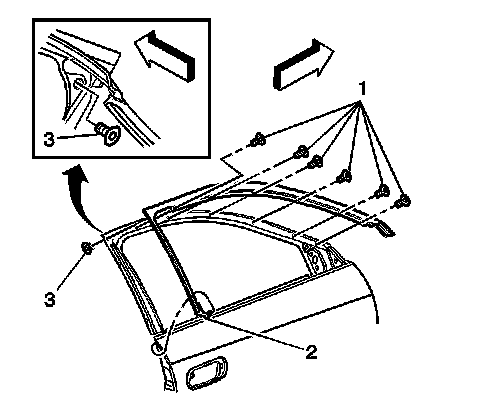

Front Side Door Upper Auxiliary Weatherstrip Replacement
Front Side Door Upper Auxiliary Weatherstrip Replacement
Removal Procedure
1. Lower the window to the full down position.
2. Remove the power mirror. Refer to Power Mirror Replacement (Power Mirror Replacement) .
3. Remove the window outer belt sealing strip. Refer to Front Side Door Window Belt Outer Sealing Strip Replacement (Front Side Door Window Belt Outer Sealing Strip Replacement) .

4. Remove the screws (1, 3) from the front door upper auxiliary molding.
5. Remove the push-in fastener (2).
6. Remove the upper auxiliary molding.
Installation Procedure
1. Install the front door upper auxiliary molding onto the door frame.
2. Install the upper, rear, corner screw (3).
3. Install the push-in fastener (2) to the door.
Notice: Refer to Fastener Notice (Fastener Notice) .
4. Install the screws (1).
Tighten the screws (1, 3) starting at the rear and working forward to 2 N.m (18 lb in).
5. Install the outer belt sealing strip. Refer to Front Side Door Window Belt Outer Sealing Strip Replacement (Front Side Door Window Belt Outer Sealing Strip Replacement) .
6. Install the power mirror. Refer to Power Mirror Replacement (Power Mirror Replacement) .